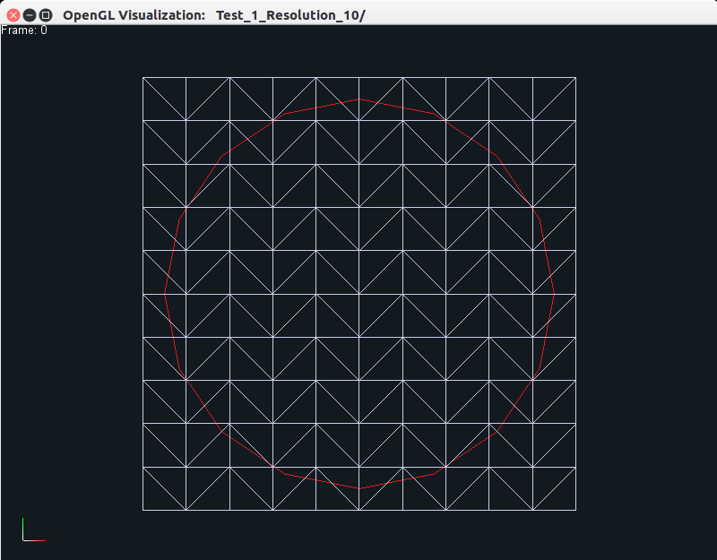
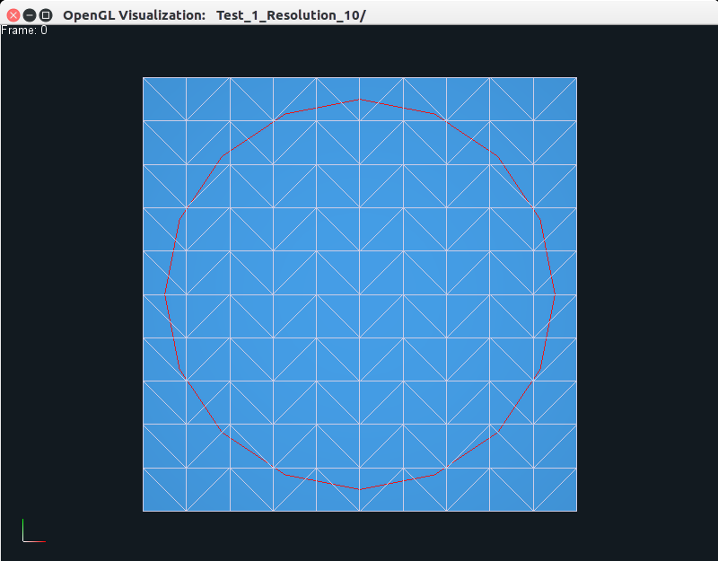
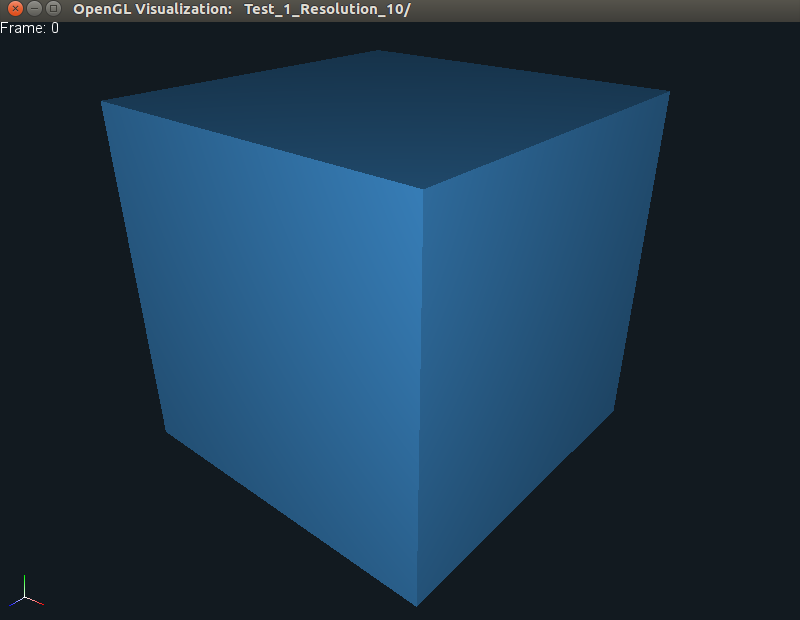
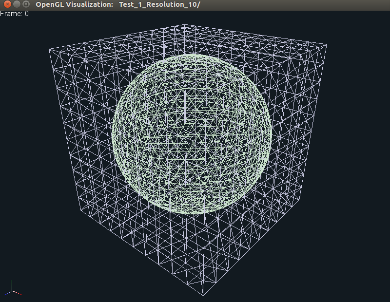
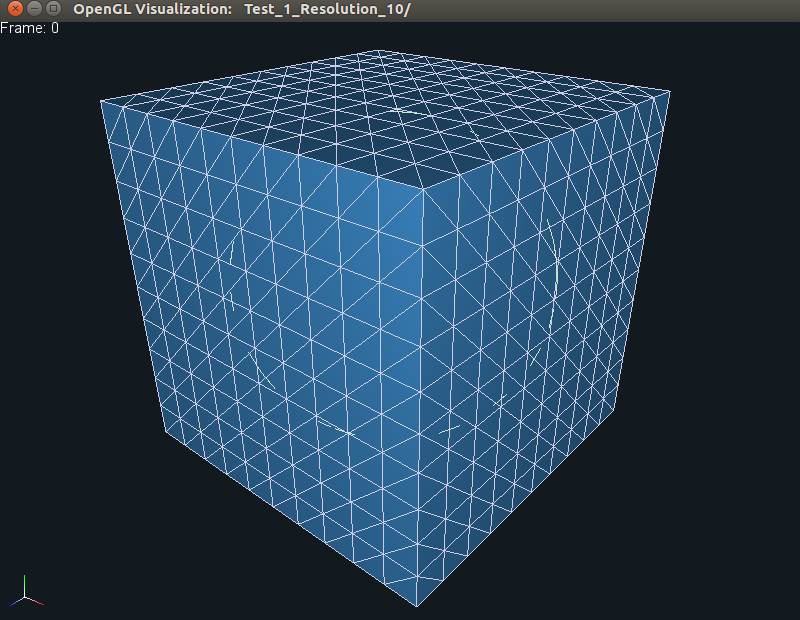

Elasticity Simulation¶
Recall that we turned on the following two flags: ENABLE_EMBEDDED_DEFORMABLES and ENABLE_EMBEDDED_DEFORMABLES_PLUGIN
when we compiled Nova. These two flags allow us to compile the
embedded_deformables project within Projects/Nova_Examples along with
its OpenGL plugin for visualizing the simulation data. The project supports both
2D and 3D simulations of surface meshes embedded in volumetric elastic bodies, and you should see two binaries named embedded_deformables_2d and
embedded_deformables_3d in the build/bin/ directory. If you run the 2D
code using the following command:
./bin/embedded_deformables_2d
then you should see some output being produced on the terminal, along with
a new directory called Test_1_Resolution_10. This data can be visualized
using the following command:
./bin/opengl Test_1_Resolution_10
which should produce the following output on your screen in a new window.
 {kind=link}
{kind=link}
{kind=link}
The left view is the one originally displayed by the viewer, while the middle
and right views can be generated by pressing the CTRL+w keys together, which
allow the user to toggle between the three different views, as shown. The user can zoom in
or out using the middle mouse button, and pan using the left mouse button. The
right mouse button can be used to reposition the object. Users familiar with
Blender may recall that we use the same
functionality for the different mouse buttons. On the top left, you can see a
small text displaying Frame 0, which means that we are viewing data at frame
0. The red curve is the surface mesh that is embedded in the blue triangulated
area using barycentric coordinates.
This also explains why we call this project embedded deformables, as we cannot
easily solve the equations of elasticity for a co-dimension 1 object, we need to
embed it in a volume (or area in two dimensions). The theory behind the
governing physics equations, how we formulate discrete systems of equations, as well as
solve them numerically are all explained very nicely in these lecture notes.
Now if you press p, you should see the square deform as its two sides are
pulled apart, as shown below:
{kind=link}
{kind=link}
{kind=link}
Here, we display frame 45 in the generated animation, and as before, the
individual views can be obtained by pressing CTRL+w keys together.
Similarly, you can also run the 3D code using the following command:
./bin/embedded_deformables_3d
This should also produce some output on the terminal, along with
a new directory called Test_1_Resolution_10. This data can be visualized
as before using the command:
./bin/opengl Test_1_Resolution_10
which should produce the following output.
  {kind=link}
{kind=link}
{kind=link}
As is evident, only the middle frame shows both the embedded sphere, as well as
the embedding tetrahedralized cube. If you now press p, then you should see
the sphere/cube deform as the two sides are pulled apart (similar to 2D), as
shown below:
{kind=link}
Both the 2D and 3D examples above simulate linear elasticity (which
corresponds to test number 1). You can also simulate the effects of using a
non-linear model, such as Neo-Hookean elasticity by using the following
commands:
./bin/embedded_deformables_2d -test_number 2
./bin/embedded_deformables_3d -test_number 2